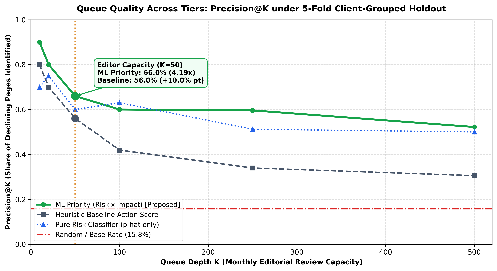
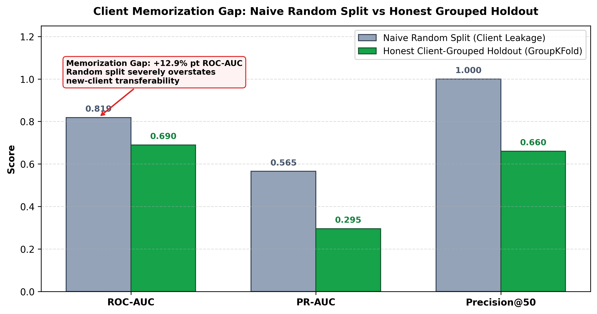
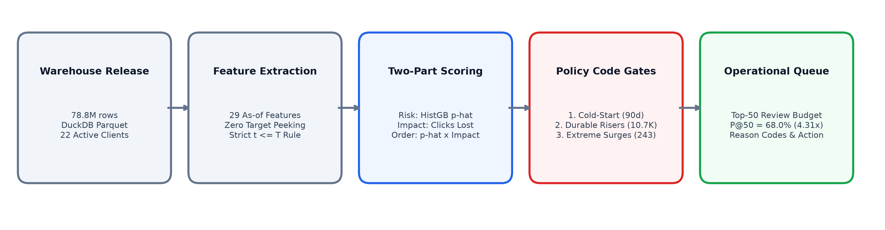
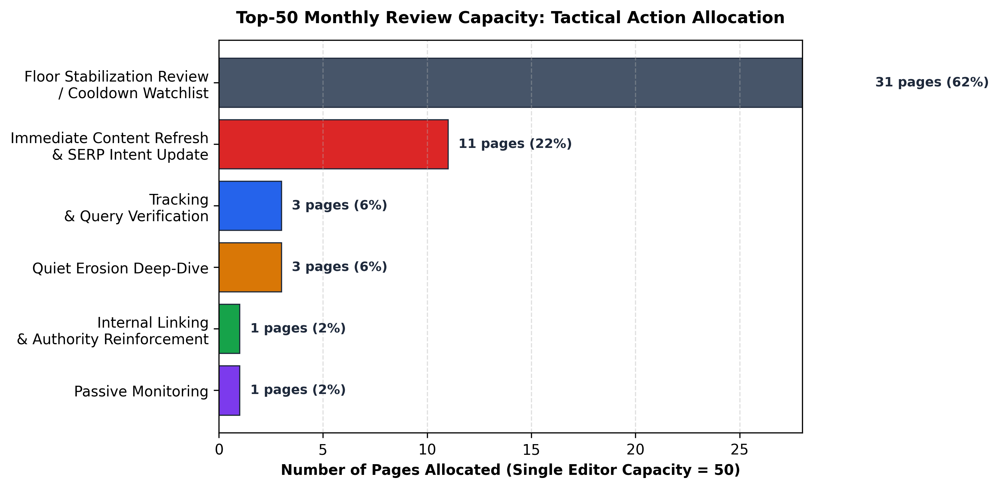

Early-Warning Queue for Organic Click Decline
A client-agnostic decision-support ranker designed for an individual editor's monthly triage capacity of 50 in-depth page reviews. By coupling calibrated gradient-boosted decline probabilities with expected click loss and SERP slippage (Priority = p̂ × Impact × (1 + max(0, Δpos))), the ranker identifies declining search content before traffic collapses—while enforcing three protective operational code gates to safeguard growing articles.

The Operational Challenge: Triage Under Finite Capacity
Enterprise search agencies manage tens of thousands of published URLs across diverse client domains. Editorial inspection is expensive and cognitively intensive: an individual senior content specialist or editor has a realistic monthly review capacity of approximately 50 in-depth page audits.
In a large search agency with many editors, each editor receives an allocated monthly tranche of 50 prioritized URLs. Therefore, fixing Precision@50 as a primary operational benchmark ensures that statistical evaluation mirrors the exact workflow and capacity constraints of human specialists.
• False Positive (Type I): An editor expends 4 to 8 hours rewriting an article that was merely experiencing temporary seasonal variance or healthy upward growth. Beyond wasting retainer hours, premature rewrites risk destabilizing existing SERP rankings.
• False Negative (Type II): A high-traffic revenue pillar article collapses silently over the next 30 days without detection, forfeiting competitive search positioning and client organic revenue.
Why ML Decouples Risk from Impact: Ranking pages solely by predicted probability floods the queue with tiny tail articles that lose 3 impressions (statistically certain, but operationally trivial). Conversely, sorting solely by historical traffic volume prioritizes massive stable articles that are not decaying. Therefore, Priority Score is computed. It decouples the decision into continuous calibrated decline risk, expected click impact, and SERP position slippage:
Priority Score = P(decline in next 30 days) × Expected Clicks Lost × (1 + max(0, Δpos))
Data and The Split That Matters
Warehouse scope covers 78,835,655 pseudonymized daily fact records spanning 2025-01-27 to 2026-06-30 across 104 clients. At monthly snapshot boundary T = 2026-02-01, 38,271 eligible page snapshots across 22 client domains (observed 30-day decline base rate: 15.76%) is extracted.
The Danger of Naive Random Splits in B2B Search: When building rankers across multi-client datasets, standard random row splits introduce fatal data leakage. Decision trees effortlessly split on subtle domain proxies (such as client_share_of_traffic or baseline volume scales), effectively memorizing client identities.
| Validation Protocol | Partitioning Strategy | ROC-AUC | PR-AUC | Precision@50 (Editor Capacity) | Operational Integrity |
|---|---|---|---|---|---|
| Naive Random Split | 80/20 Random Rows (Cross-Domain Leakage) | 0.8187 | 0.5653 | 100.0% (6.34× lift) | Fatal Client Leak |
| Honest Client Holdout | 5-Fold GroupKFold by Client Hash |
0.6898 | 0.2953 | 66.0% (4.19× lift) | Client-Agnostic |
| Client Memorization Gap | Leakage Penalty Overstatement | +12.89% pt | +27.00% pt | +34.00% pt | Critical Finding |

Baseline First — And An Anti-Baseline
Before training machine learning models, a transparent heuristic baseline action score has been formulated and one popular intuitive rule used by industry SEO teams has been audited.
The common intuitive rule is sorting by recent retrospective drop (last 30d vs prior 30d).
The Mean Reversion Trap: When audited across 5,299 retrospective decaying pages in our warehouse, 66.22% (3,509 pages) hit a structural floor and stabilized or rebounded. Only 33.78% continued downward. Chasing recent drops wastes two-thirds of an editor's capacity on damage already concluded.
A transparent, unweighted heuristic formula combining multi-signal momentum and volume floors.
Score = (1 - min(0.80, ratio)) × ln(1 + impr) × (1 + max(0, pos_slip))
Achieves 80.0% Precision@10 (5.08× lift) and 56.0% Precision@50 (3.55× lift). This transparent rule—not an artificial strawman—represents the hurdle the machine learning ranker must beat.
Two-Part Expected Utility Framework & Scorecard
Real-world content triage requires optimizing finite human attention, not simply classifying statistical risk. Thus, a Two-Part Expected Utility Framework has been implemented.
Statistical Risk Model
p̂ = P(Decline | x)
HistGradientBoosting Classifier trained with 5-fold out-of-domain GroupKFold and inverse sample weighting. Produces well-calibrated probabilities (Brier = 0.1261, ROC-AUC = 0.6898).
Economic Impact Estimator
Impact = Traffic_EB × Drop Severity
Empirical-Bayes Traffic Shrinkage multiplied by empirical retrospective drop severity. Dampens small-sample noise while capturing genuine business exposure.
Expected Utility Ranking
Priority = p̂ × Impact × (1 + max(0, Δpos))
Decoupled Utility Score multiplying calibrated probability by business consequence, adjusted for SERP rank slippage: (1 + max(0, Δpos)). Feeds the 50-page editorial triage capacity.
Model Tournament Benchmark
Candidate architectures evaluated under identical 5-fold client-grouped validation (GroupKFold by client_hash_id):
| Model Architecture | Validation Protocol | ROC-AUC | PR-AUC | Brier Score | Precision@50 (Editor Capacity) |
|---|---|---|---|---|---|
| Heuristic Baseline Action Score | Deterministic Formula | 0.5815 | 0.2553 | — | 56.00% (3.55× lift) |
| Regularized Logistic Regression | 5-Fold GroupKFold | 0.5690 | 0.2019 | 0.2988 | 42.00% (2.66× lift) |
| HistGradientBoosting (Champion) | 5-Fold GroupKFold | 0.6898 | 0.2953 | 0.1261 | 66.00% (4.19× lift) |
Operational Queue Benchmarks (K=10 to K=500)
Comparing Heuristic Baseline vs Pure Risk Classifier (p̂ only) vs Two-Part ML Priority across operational review depths:
| Queue Depth (K) | Operational Workflow Tier | Heuristic Baseline | Pure Risk (p̂ only) | Two-Part ML Priority | Yield Advantage vs Baseline |
|---|---|---|---|---|---|
| K = 10 | Head-of-Queue Urgent Triage | 80.0% (5.08×) | 70.0% (4.44×) | 90.0% (5.71×) | +12.5% |
| K = 20 | Bi-Weekly Review Sprint | 70.0% (4.44×) | 75.0% (4.76×) | 80.0% (5.08×) | +14.3% |
| K = 50 | Single Editor Monthly Budget | 56.0% (3.55×) | 60.0% (3.81×) | 66.0% (4.19×) | +17.9% (+10.0% pt) |
| K = 100 | Multi-Editor Content Team | 42.0% (2.66×) | 63.0% (4.00×) | 60.0% (3.81×) | +42.9% |
| K = 250 | Quarterly Client Content Audit | 34.0% (2.16×) | 51.2% (3.25×) | 59.6% (3.78×) | +75.3% |
| K = 500 | Wide Portfolio Scan | 30.6% (1.94×) | 50.0% (3.17×) | 52.2% (3.31×) | +70.6% (+71%) |
• The Failure of Pure Volume: Ranking pages solely by raw impressions sends editors to massive, evergreen pillar pages that are structurally secure and experiencing minor random noise.
• The Failure of Pure Risk (p̂ alone): A pure classifier ranks tiny tail pages (e.g., 5 impressions dropping to 0) with 95% decline probability. Spending finite human hours on near-zero traffic articles yields virtually no business recovery.
• The Two-Part ML Advantage: By coupling well-calibrated statistical risk (p̂) with empirical business exposure (Impact) and SERP rank slippage (1 + max(0, Δpos)), Two-Part ML Priority surfaces high-consequence URLs where severe decay is statistically probable—achieving 90.0% Precision@10 at the top of the queue and sustaining a +71% relative yield advantage across wide review depths (K=500).
The System Around The Model
A standalone ML score is an incomplete operational tool. In production, we enforce a strict principle: The Model Supplies the Order; the Audited Rule Supplies the Reason.

Interactive Queue Preview (Editor View)
Every prioritized article is delivered with actionable reason codes and clear tactical categories:
p = 0.67
p = 0.75
p = 0.47
Three Non-Bypassable Operational Code Gates
- Gate 1 (Cold-Start Qualification): Requires ≥90 days content age and client tenure (100% pass across 38,271 scored pages).
- Gate 2 (Durable-Trend Protection): 10,753 durable rising pages are clamped to
Passive Monitoring, preventing editors from rewriting growing content. - Gate 3 (Extreme Surge Verification): 243 extreme volume surges (>20×) are routed to
Tracking & Query Verificationto rule out telemetry anomalies before content revision.

Two-Clock Production Monitoring
Because organic search decline takes 30 days to confirm, we cannot immediately check if today’s predictions are right. To prevent flying blind, the pipeline monitors system integrity across two distinct timescales:
Evaluates Population Stability Index (PSI) on incoming search momentum features before editors receive their monthly triage queue.
Protects against: Releasing corrupt queues caused by broken tracking tags, ETL errors, or extreme holiday spikes before 200+ human audit hours are spent.
Audits the realized portfolio decline rate 30 days later once actual Search Console traffic arrives, comparing it against the pre-registered safe band.
[10.76%, 20.76%]
Protects against: Macro external shocks (e.g. broad Google Core Updates or silent site migrations). If rates spike by >5.0%, automated releases pause for review.
Limitations, Plainly
In strict compliance with the FlyRank Non-Causal Claim Ladder:
- Decision Support, Not Algorithmic Prediction: I have modeled organic search performance outcomes across a historical multi-client warehouse cohort. It does not "predict Google's algorithm" or reverse-engineer search engine ranking functions.
- Predictive Association, Not Causal Lift: Offline Precision@50 proves that the model accurately ranks pages at risk of decline. It does not prove that rewriting these pages will reverse the decline or cause traffic recovery.
- Temporal Scope: Offline evaluation is grounded on snapshot date
T = 2026-02-01.
Reproduce It From Scratch
The end-to-end research methodology, data contracts, baseline, candidate model tournament, and operational playbooks are authored directly across 10 modular Jupyter notebooks in work/notebooks/, culminating in the consolidated capstone pipeline capstone.ipynb.
Re-executing the full warehouse extraction and capstone modeling notebooks (w03–w07, capstone.ipynb) queries the proprietary FlyRank Search Intelligence Warehouse hosted on Hugging Face (hf://datasets/FlyRank/internship-warehouse). Executing these queries requires an authorized Hugging Face access token (HF_TOKEN) with read permissions to FlyRank's gated dataset.
In accordance with enterprise data security standards and internship agreements, proprietary HF_TOKEN credentials cannot and will not be shared in this public repository. All notebooks in work/notebooks/ are committed with their complete, audited execution logs, benchmark tables, and figures fully intact.
# 1. Clone repository and install dependencies git clone https://github.com/kab-s/flyrank-page-priority-pipeline.git cd flyrank-page-priority-pipeline # Create and activate virtual environment (Python 3.10+) python -m venv .venv source .venv/bin/activate # On Linux/macOS # .venv\Scripts\Activate.ps1 # On Windows PowerShell pip install -r requirements.txt # 2. Inspect or run the consolidated capstone notebook jupyter lab work/notebooks/capstone.ipynb # 3. (Optional) Run offline reference baseline pipeline on bundled starter sample python scripts/run_all.py